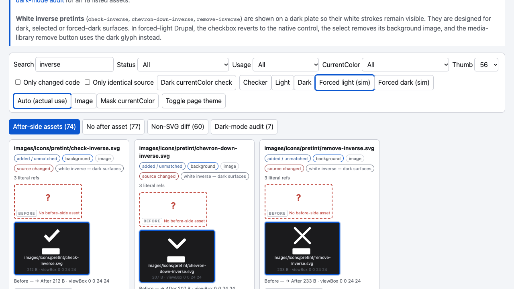
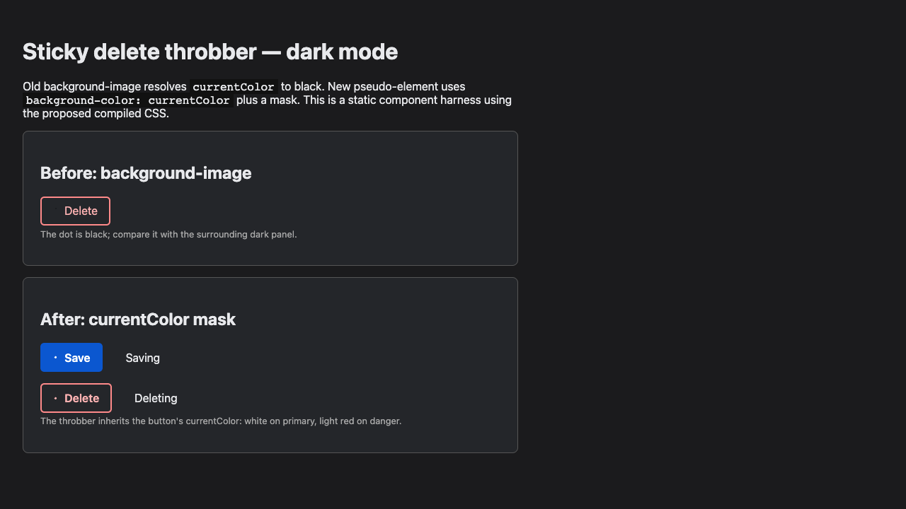

Scope: appearance, blocks, bookmarks, chevron-left, content, files, loader, media, menu, nav-toggle-left, nav-toggle-top, people, reports, search, structure, user, pretint/chevron-down-default, pretint/remove-default.
This is a source/consumer audit, not a claim that every black thumbnail is a Drupal failure.
| Group | Assets | Dark-mode result | Verdict |
|---|---|---|---|
| Unused after assets | 16: the 14 named module/toolbar icons plus pretint/chevron-down-default and pretint/remove-default |
No Drupal consumer. As an <img>/background-image, currentColor resolves to black; as a mask/inline SVG it would inherit the text colour. |
14 removed in the proposed cleanup; search and chevron-left remain pending removal/attachment |
| Inline currentColor | menu.svg |
Included inline in menu-local-task.html.twig; currentColor inherits the surrounding text colour, so it is light in dark mode |
Not a bug; the gallery’s Image mode shows it black, which is why it looked wrong |
Background currentColor |
loader.svg |
Used as background-image in more-actions.pcss.css; currentColor cannot inherit through a background image and resolves to black |
Confirmed dark-mode bug; fixed in the proposed pseudo-element/mask patch |
pretint/check-inverse.svg, pretint/chevron-down-inverse.svg and pretint/remove-inverse.svg are white by design. They disappear on a white preview plate, but that does not mean the files are missing.

| Asset | Consumer | Forced-light behaviour |
|---|---|---|
check-inverse.svg |
Checked checkbox background, form--checkbox-radio.pcss.css |
Forced colours sets appearance: revert, so the native checkbox is used; the white pretint is not the forced-light control |
chevron-down-inverse.svg |
.dark-mode select, form--select.pcss.css |
The forced-colours select rule removes background-image and uses the native arrow |
remove-inverse.svg |
Dark mode and forced-dark media-library remove, media-library-item.pcss.css |
Forced light uses the dark remove glyph; the inverse glyph is for dark/forced-dark surfaces. The :active rule also uses the inverse and should be checked in a real forced-light component |
The gallery now detects -inverse.svg, renders these on a dark plate, and labels them white inverse — dark surfaces. It also labels them no before counterpart rather than “source changed”.
The gallery’s Image mode renders each SVG through an <img> element. An external SVG has no inherited currentColor, so the browser uses black. That is not how an inline SVG or a CSS mask behaves:
background-color supplies the visible colour.currentColor inherits the text colour.currentColor becomes black.The gallery now labels this explicitly:
menu is previewed as a mask.loader is marked as a real risk.after/core/themes/default_admin/css/components/more-actions.pcss.css:66:
background-image: var(--admin-icon-loader);
loader.svg uses stroke="currentColor". A background image cannot inherit currentColor, so the sticky Save/Preview/Delete throbber is black. On a dark page, and on a transparent danger button, it disappears. The fix is to render the loader through a pseudo-element using background-color: currentColor plus a mask, or to provide a mode-specific pretinted loader.

The proposed pseudo-element is in interdiff-loader-currentcolor.patch. It keeps the button background intact, draws the loader with background-color: currentColor and a mask, preserves the throb animation through mask-position/mask-size, and disables the animation under prefers-reduced-motion: reduce.
Static harness: proposed/test/loader-dark.html. It uses the proposed compiled CSS and Drupal's real body:has([data-drupal-selector="edit-delete"] + .ajax-progress) selector.
search and chevron-left remain) or attach them to a component with a real mask/inline use.menu.svg unchanged; it is inline and inherits correctly.loader.svg usage with a currentColor mask/pseudo-element or a tested pretint.<img> thumbnails of currentColor SVGs as evidence of a dark-mode failure; test the actual consumer.